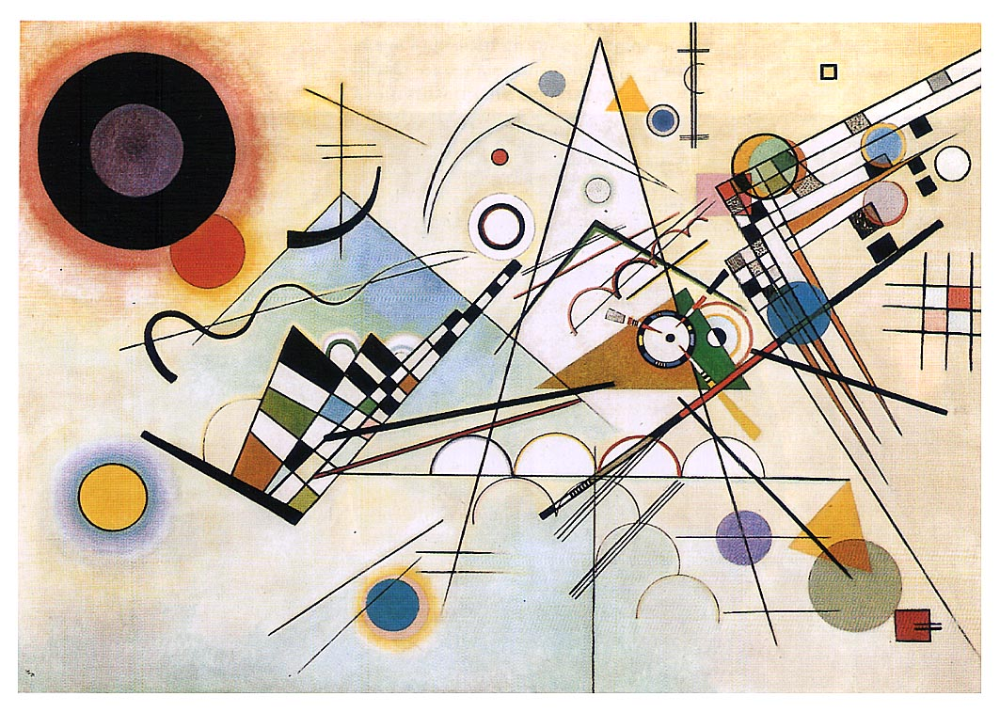

«Композиция VIII»
Кандинский считал эту картину одной из самых главных в своем творчестве – точным выражением своей теории об эмоциональных свойствах цвета, линии, формы. В период завершения работы над ней он преподавал в Баухаузе и работал над книгой «Точка и линия на плоскости», она вышла в 1926 году. С момента создания первой безымянной абстрактной акварели прошло 13 лет. «Композиция VIII» была нарисована в так называемый «холодный период», полотна которого были отмечены строгостью, научной логикой и содержали рациональное начало. В этой картине художник шел от цвета к форме, она создает композицию и является главным действующим лицом. В трактате «Точка и линия на плоскости» есть подробный рассказ о психологическом значении каждой изображенной фигуры. Горизонтали звучат «холодно и минорно», вертикали «тепло и высоко», острые углы – «теплы, остры, активны и желты», а прямые - «холодны, сдержаны и красны». Художник понимал все трудности, которые могут возникнуть у неподготовленного зрителя, и говорил, что эта картина требует другого подхода в ознакомлении: нужно сначала рассмотреть ее вблизи, потом расслабить глаза и позволить увиденному проникнуть в ту часть мозга, которая реагирует на музыку. Несмотря на новаторство этого произведения, в нем есть повторяющиеся мотивы из прежних работ Кандинского. Если внимательно посмотреть на левую часть картины, можно увидеть стилизованное изображение горы с крестом. На более ранних полотнах - «Картина с лучником», «Москва I» - мы обнаружим церковь на возвышении. Кандинский был глубоко верующим человеком и ассоциировал религию с тем, «что мы ищем в искусстве». «Композиция VIII» была одной из первых картин, купленных Соломоном Гуггенхаймом для своей обширной коллекции. В 1930 году он посетил Баухауз, пришел в восторг от картин Кандинского и с удовольствием купил их. Сейчас в музее Гуггенхайма находятся 150 работ художника, они составляют основу коллекции и являются самым обширным собранием полотен Кандинского за океаном.